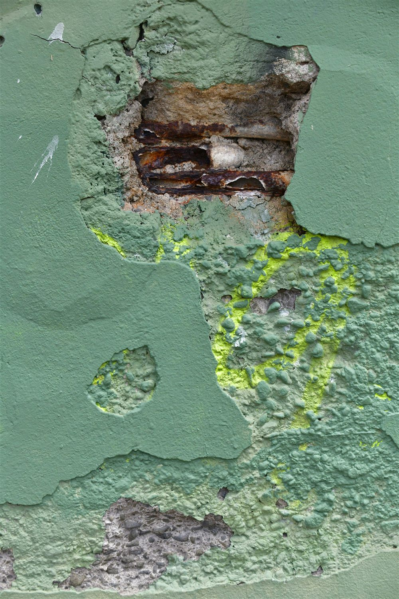
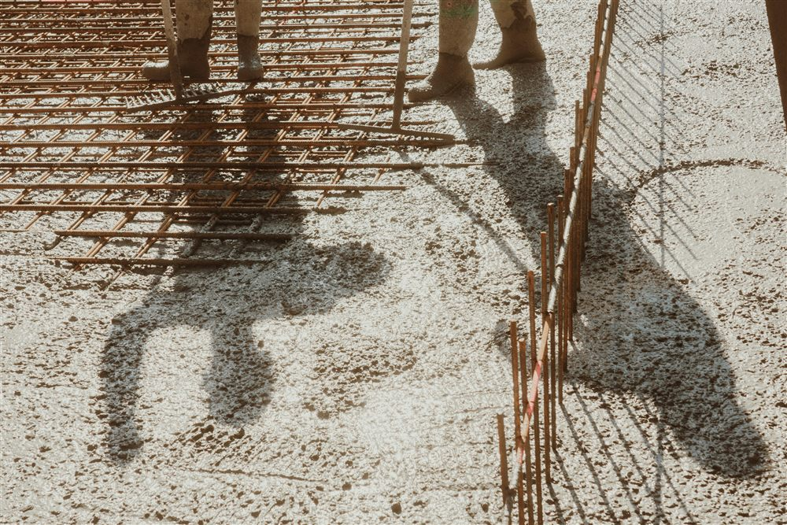

Qu'est-ce que l'enrobage ?
L'enrobage est la distance entre la surface extérieure d'une armature et la face du béton la plus proche. Dans une poutre, un poteau, une dalle ou une fondation, chaque acier est ainsi entouré d'une couche de béton dont l'épaisseur est définie à l'avance sur le plan d'armatures.
La norme de calcul (Eurocode 2, NF EN 1992-1-1) distingue deux notions. L'enrobage minimal (cmin) est la valeur en dessous de laquelle on ne doit jamais descendre. L'enrobage nominal (cnom), celui qui figure sur les plans, ajoute une marge de sécurité pour les inévitables imprécisions du chantier : cnom = cmin + une tolérance d'exécution, généralement de l'ordre de 10 mm.
L'enrobage n'est pas un réglage de chantier, c'est une donnée de calcul. Il est fixé au bureau d'études en fonction de l'ouvrage et de son environnement, puis reporté sur les plans. Le rôle du chantier est de le respecter, pas de l'improviser.
À quoi sert l'enrobage
Cette couche de béton remplit trois fonctions essentielles :
- Protéger l'acier de la corrosion. Le béton sain est très alcalin, ce qui forme une couche passive autour des armatures et les empêche de rouiller. L'enrobage garantit une épaisseur suffisante de ce béton protecteur.
- Assurer l'adhérence acier-béton. Le béton armé ne fonctionne que si les deux matériaux travaillent ensemble. Un enrobage correct permet à l'effort de bien se transmettre entre l'acier et le béton.
- Contribuer à la résistance au feu. En cas d'incendie, c'est le béton d'enrobage qui retarde l'échauffement des aciers et préserve la capacité portante de la structure.

Comment se détermine l'enrobage
L'enrobage dépend avant tout de l'environnement auquel l'ouvrage est exposé. L'Eurocode 2 classe ces environnements en classes d'exposition, selon le mécanisme d'agression dominant : carbonatation (classes XC), chlorures d'origine non marine (XD), chlorures marins (XS), gel-dégel (XF), attaque chimique (XA).
Plus l'agression est forte, plus l'enrobage requis est important. La durée d'utilisation visée (couramment 50 ans) et la qualité du béton interviennent également. Le tableau ci-dessous donne des ordres de grandeur indicatifs pour une classe structurale courante ; les valeurs exactes sont fixées au cas par cas dans la note de calcul.
| Environnement | Classe d'exposition | Enrobage indicatif |
|---|---|---|
| Intérieur sec (locaux chauffés) | XC1 | ≈ 25 mm |
| Extérieur abrité, humidité modérée | XC2 / XC3 | ≈ 35 mm |
| Extérieur exposé à la pluie | XC4 | ≈ 40 mm |
| Bord de mer, embruns salins | XS1 / XS3 | ≈ 45 à 55 mm |
Les fondations coulées à même le sol font l'objet d'exigences renforcées, avec des enrobages souvent plus élevés encore. En bord de mer, le sujet devient critique.
Aux Antilles, l'enrobage est un enjeu majeur. En Guadeloupe comme en Martinique, l'atmosphère saline attaque les aciers bien plus vite qu'en métropole. Un enrobage sous-dimensionné, associé à un béton peu compact, réduit fortement la durée de vie des ouvrages en front de mer. MH Structure adapte les enrobages à cette réalité climatique.
Ce qui arrive quand l'enrobage est insuffisant
Un enrobage trop faible enclenche un mécanisme lent mais inexorable. L'air et l'humidité pénètrent jusqu'à l'acier, la couche protectrice disparaît (par carbonatation ou sous l'effet des chlorures), et l'armature commence à rouiller. En rouillant, l'acier gonfle : il occupe jusqu'à plusieurs fois son volume initial. Cette pression fait fissurer puis éclater le béton d'enrobage.
On observe alors des épaufrures (éclats de béton), des coulures de rouille en surface, des fissures parallèles aux aciers, et à terme des armatures à nu. Au-delà de l'aspect, c'est la capacité portante qui diminue, car la section d'acier utile se réduit. Les réparations, elles, coûtent bien plus cher que le respect de l'enrobage au départ.
Comment garantir l'enrobage sur le chantier
Une fois l'enrobage fixé sur les plans, tout se joue à la mise en œuvre, avant le coulage :
- Les cales d'enrobage (distanciers). Ces pièces en plastique ou en mortier, placées entre les armatures et le coffrage, maintiennent l'acier à la bonne distance. Leur nombre et leur position sont essentiels : sans elles, le ferraillage se déplace au bétonnage.
- Le contrôle avant bétonnage. C'est le dernier moment pour vérifier que l'enrobage est respecté partout, y compris dans les angles et en sous-face. Une fois le béton coulé, plus rien n'est visible.
- Des plans d'armatures clairs et cotés. L'enrobage doit être indiqué sans ambiguïté sur les plans d'exécution, pour que l'entreprise sache exactement quoi respecter.
Le contrôle de l'enrobage se fait avant le coulage, jamais après. Une visite au moment du ferraillage, cales en place et plans en main, évite un désordre qui ne se révélerait que des années plus tard, une fois le béton en place.

Comment MH Structure vous accompagne
L'enrobage se décide en amont, dans l'étude, et se vérifie sur le terrain. MH Structure intervient sur toute cette chaîne, en France métropolitaine comme en Guadeloupe :
- Notes de calcul béton armé conformes à l'Eurocode 2, avec les enrobages déterminés selon la classe d'exposition réelle de l'ouvrage.
- Plans de coffrage et d'armatures précisant clairement les enrobages à respecter, poste par poste.
- Adaptation au climat : enrobages renforcés et dispositions de durabilité pour les ouvrages exposés à l'atmosphère saline des Antilles.
- Diagnostic des désordres sur ouvrages existants présentant des signes de corrosion des armatures.
Un projet de construction ou un ouvrage qui montre des signes de corrosion ? Décrivez-nous votre besoin : nous définissons les enrobages adaptés à votre environnement, ou nous évaluons un désordre existant. Premier échange gratuit, devis sous 48h.
Photos : Nick Sokolov, Rob Dean, d c — via Unsplash